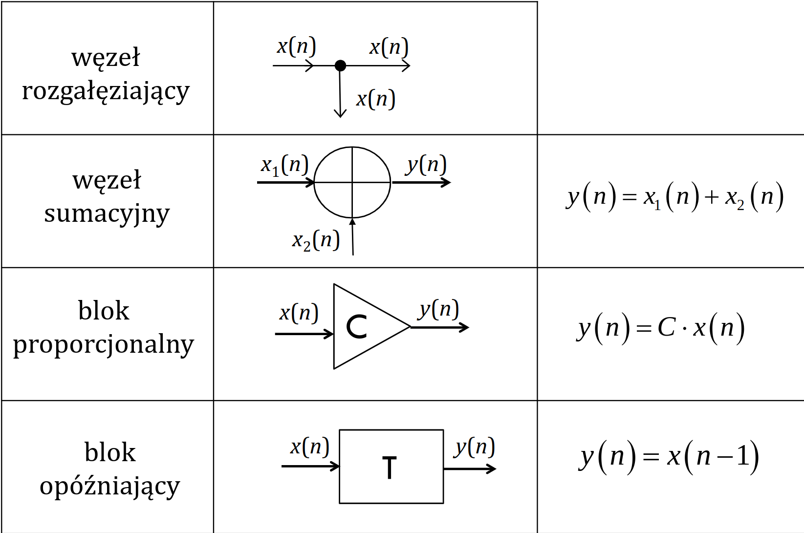

Filtracja cyfrowa
System LS
Liniowy i stacjonarny (LTI - Linear Time-Invariant) ### Liniowość \[\alpha x_1(n) + \beta x_2(n) \rightarrow \alpha y_1(n) + \beta y_2(n)\] ### Stacjonarność \[x(n-N) \rightarrow y(n-N) \quad N > 0, n \in \mathbb{Z}\]
Charakterystyki czasowe
- Odpowiedź impulsowa filtru cyfrowego \(h(n)\)
- z jednej odpowiedzi można dowiedzieć się wszystkiego o systemie
- \(\delta(n) \rightarrow h(n)\)
- Odpowiedź jednostkowa (skokowa) filtru cyfrowego
- \(\mathbb{1}(n) \rightarrow k(n)\)
- Sygnał wejściowy = wymuszenie = pobudzenie
- Sygnał wyjściowy = odpowiedź \[ \delta(n) = \mathbb{1}(n) \mathbb{1}(n-1) \implies h(n) = k(n) - k(n-1) \] ## Odpowiedź na dowolne pobudzenie Odpowiedź \(y(n)\) na dowolne pobudzenie \(x(n)\) jest splotem czasu dyskretnego tego pobudzenia z odpowiedzią impulsową \(h(n)\)
\[y(n) = h(n) * x(n)\]
Równanie wejście-wyjście
Równanie ma postać równania różnicowego zwyczajnego o stałych współczynnikach z warunkami początkowymi \(y(n_0), y(N_0-1), \ldots, y(n_0 -m + 1)\)
\[ y(n) = -\sum_{i=1}^m a_i y(n-i) + \sum_{j=0}^l b_j x(n-j) \quad n \ge n_0 \] ### Filtry SOI * O skończonej odpowiedzi impulsowej * Nierekursywne równanie
\[y(n) = \sum_{j=0}^l b_j x(n-j)\] Odpowiedź impulsowa \[h(n) = \sum_{j=0}^l b_j \delta(n-j)\]
Filtry NOI
- O nieskończonej odpowiedzi impulsowej
- Opisany równaniem rekursywnym
Elementy schematów blokowych
- Węzeł rozgałęziający
- Węzeł sumacyjny
- Blok proporcjonalny
- Blok opóźniający

Opis w dziedzinie czestotliwości
Charakterystyka częstotliwościowa
- \(H(\Omega)\) - charakterystyka
częstotliwościowa filtru cyfrowego
- \(h(n) \leftrightarrow H(\Omega)\) - dyskretna transformata Fouriera
- \(Y(\Omega) = X(\Omega)H(\Omega)\)
- \(A(\Omega)\) - charakterystyka
amplitudowa
- parzysta
- \(\phi(\Omega)\) - charakterystyka
fazowa
- nieparzysta
\[H(\Omega) = |H(\Omega)| \exp(j \arg(H(\Omega))) = A(\Omega) \exp(j\phi(\Omega))\]
Podział filtrów
- LP (low-pass) - dolnoprzepustowy
- HP (high-pass) - górnoprzepustowy
- BP (band-pass)
- BS (band-stop)
Odpowiedź na pobudzenie harmoniczne
\[\exp(j\Omega_0 n) \rightarrow \exp(j\Omega_0 n) H(\Omega_0)\] \[K \rightarrow KH(0)\] ## Opis w dziedzinie zespolonej
Transformata Z
- Rozwiązywanie równań różnicowych i układów równań różnicowych
- Wyznaczanie składowej wymuszonej i swobodnej odpowiedzi
- Wyznaczanie transmitancji filtru
- Wyznaczanie odpowiedzi impulsowej z transmitancji
- Wyznaczanie odpowiedzi jednostkowej w dziedzinie \(z\)
- Wyznaczanie odpowiedzi filtru na pobudzenie przyczynowe
- Rozkład zer i biegunów transmitancji w płaszczyźnie zmiennej zespolonej \(z\)
- Badanie stabilności systemu
Definicja jednostronnej transformaty Z
\[X(z) = \sum_{n=0}^\infty x(n)z^{-n}, z \in \mathbb{C}\] * Przekształcenie z dziedziny \(n\) do dziedziny zmiennej zespolonej \(z\) * Nieskończony szereg potęgowy zmiennej zespolonej \(z\)
Transmitancja
- \(h(n) \leftrightarrow H(z)\) - transformata Z odpowiedzi impulsowej
- \(Y(z) = X(z)H(z)\)
- Związek między transmitancją a charakterystyką częstotliwościową
- \(H(\Omega) = H(z) |_{z=e^{j\Omega}}\)
Transmitancja filtrów SOI i NOI
\[ y(n) = -\sum_{i=1}^m a_i y(n-i) + \sum_{j=0}^l b_j x(n-j) \quad n \ge n_0 \]
- Transmitancja filtru SOI
- \(H(z) = b_0 + b_1z^{-1} + \ldots + b_lz^{-l}\)
- Transmitancja filtru NOI
- \(H(z) = \frac{b_0 + b_1z^{-1} + \ldots + b_lz^{-l}}{1 + a_1z^{-1} + \ldots + a_mz^{-m}}\)
Połączenie szeregowe
\[h = h_1 * h_2\] \[H(z) = H_1(z) \cdot H_2(z)\]
Połączenie równoległe
\[h = h_1 + h_2\] \[H(z) = H_1(z) + H_2(z)\] ### Połączenie ze sprzężeniem zwrotnym
\[H(z) = \frac{H_1(z)}{1 + H_1(z) \cdot H_2(z)}\]